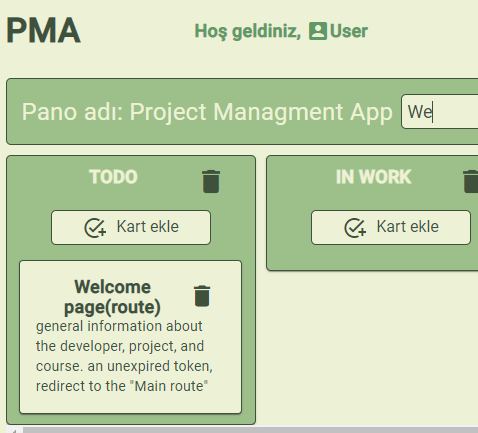
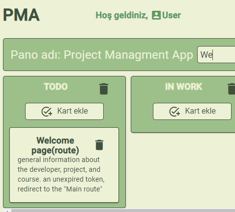

Project Managment App
Service for project management in the form of a list of boards, columns filled with tasks used by your team or directly by you. You can drag tasks between columns to show progress. Users can create tasks, describe them. PMA helps an individual in a team or group of developers achieve their goals.
 

About developer
 My name is Dilbar Akkaya. I’m currently learning Web Development. I have no experience on front-end developmet. My goal is to become a front-end development specialist. The skills and experience acquired in other fields and my personal qualities, purposefulness, a strong desire to learn, self-develop, easy to adapt to different conditions, discipline, motivation, will help in achieving the goal. I choose frontend because I really like it when I can instantly see the result of my work. On my GitHub page you can see other projects created within the school
My name is Dilbar Akkaya. I’m currently learning Web Development. I have no experience on front-end developmet. My goal is to become a front-end development specialist. The skills and experience acquired in other fields and my personal qualities, purposefulness, a strong desire to learn, self-develop, easy to adapt to different conditions, discipline, motivation, will help in achieving the goal. I choose frontend because I really like it when I can instantly see the result of my work. On my GitHub page you can see other projects created within the school